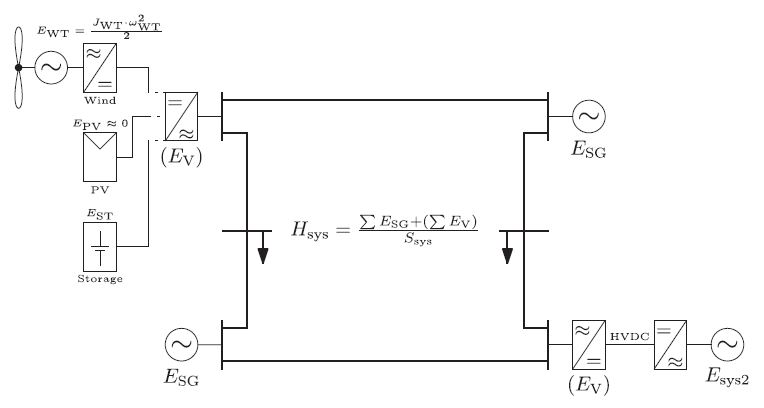
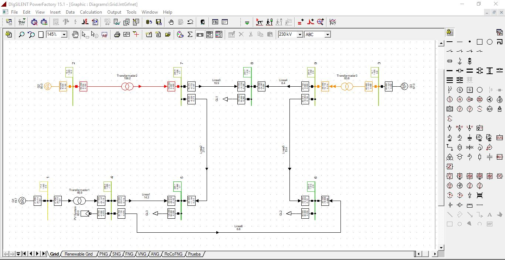
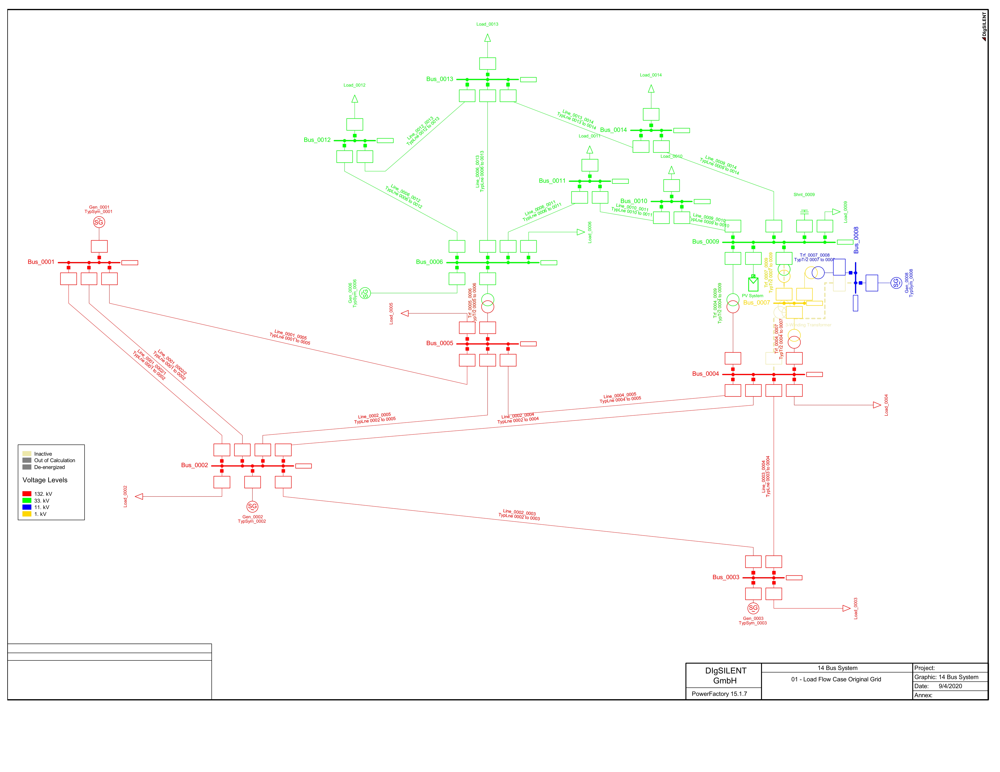
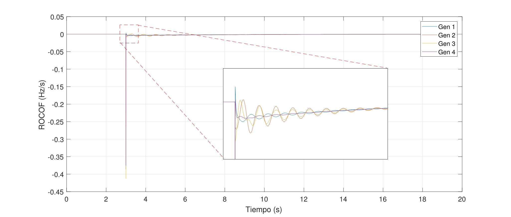

-Sistemas eléctricos con generación fotovoltaica y/o eólica
Tema para obtención de grado de Maestría en Ciencias de la Ingeniería Eléctrica por la UANL.
-Estimación de inercia mediante PMU’s
Los sistemas eléctricos con presencia de energías renovables presentan una baja inercia debido al funcionamiento de este tipo de energías.
El trabajo propone un método para censar la inercia del sistema en tiempo real con mediciones en unidades de generación.
-Softwares de simulación y procesamiento de señales
DigSilent Power Factory para modelado, simulación y extracción de señales del sistema (flujos de potencia y fallas), MATLAB para el procesamiento y ejecución del método propuesto en tiempo real (ventana de datos y filtros).
Evidencia


